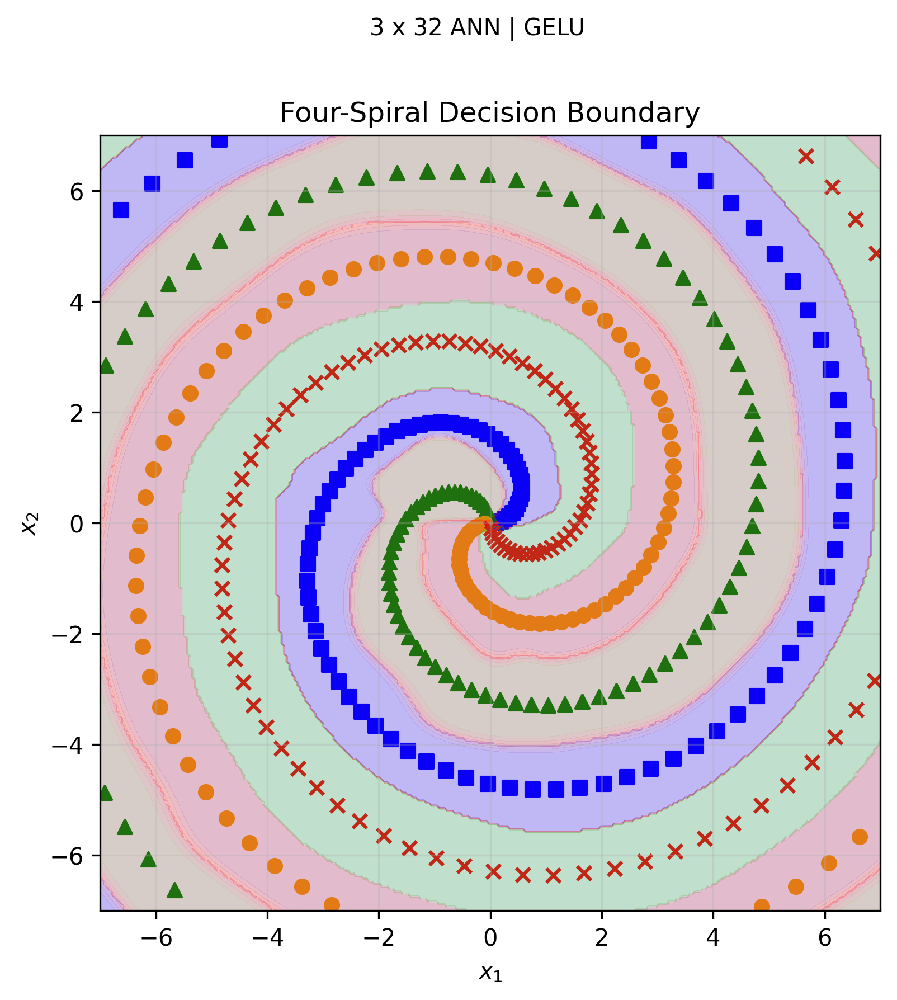
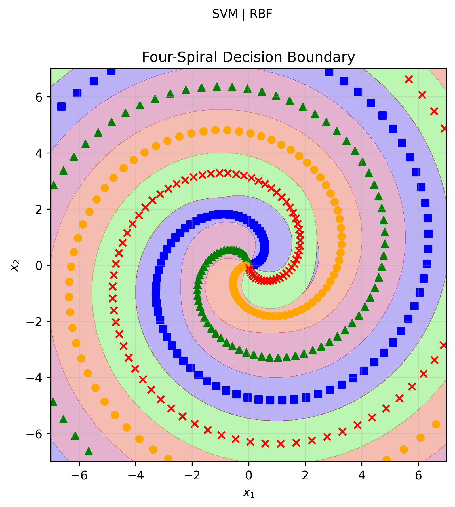

Technology professional in Newcastle, Australia, currently undertaking a cadetship at a bank and studying Computer Science and Data Science, majoring in AI. I would describe myself as a critical thinker, and as an optimiser.
Technical Interests
- Software Engineering
- Artificial Intelligence
- Systems & Infrastructure
- Financial Technology
Experience
Technology Cadet · Newcastle Greater Mutual Group
– present · Newcastle, NSW
Two-year cadetship across technology teams. Selected work from each rotation:
- IT Service Desk: work included setting up shared project folders and group access permissions.
- Cybersecurity: contributed to cyber awareness activities and phishing simulations using Microsoft Defender.
- Platforms & Programming: designed and ran a legacy modernisation workflow using deterministic analysis and the GitHub Copilot SDK; configured tooling including GitHub Actions, Advanced Security, repository rulesets and Codespaces.
- Data & Analytics: upcoming rotation.
Projects
Spiral classification · ANN & SVM
- Trained an artificial neural network (ANN) and a support vector machine (SVM) in Python, using PyTorch for the ANN.
- Tuned the SVM’s RBF kernel with five-fold cross-validation.
- Both models achieved 100% training accuracy on 600 points; visualised their decision boundaries.


Food image classifier · CNN, ResNet
- Contributed to a university team classifier for 40 food categories.
- Collected supermarket photos and compared a CNN trained from scratch with a pretrained ResNet.
- Tuned models on a validation split; the team evaluated overall and per-category accuracy.
Other university projects
- Data pipeline: cleaned electricity demand data from five states; applied principal component analysis.
- CPU scheduling: implemented four algorithms in Java and compared process wait times.
- Synchronisation: coordinated shared access with semaphores; implemented timed waits in Nachos.
- TuneTown 2: built a PHP/XML music catalogue with album submissions.
- Spambase: clustered 4,601 emails and compared clusters with spam labels.
- Virtual memory: simulated demand paging, page faults and disk writes in Java.
Personal projects
- Repository template: Python tools to check Markdown and preview broken-link repairs.
- This portfolio: HTML and CSS, deployed through GitHub and Cloudflare Pages.
- Other personal projects: developing additional projects, with details to be shared at commercial release.
Education & Credentials
Bachelor of Computer Science and Data Science
University of Newcastle · In progress · Artificial Intelligence major
- Selected completed coursework: algorithms, data structures, database management, machine intelligence, predictive analytics, and data wrangling & visualisation.
- Languages studied: Python, R, C++ and Java.
Microsoft credentials
Outside work
Gym, volleyball, films, gaming and music.